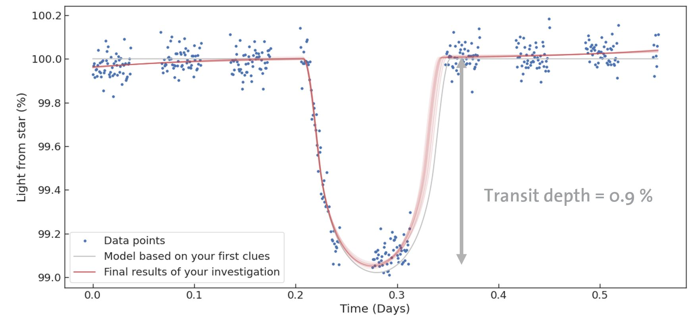

There's an absolutely outrageous amount of information you can view online about how to write a personal statement. You will notice very quickly that not all of it agrees - this is simply because there are many possible ways to write a personal statement, and everybody has their preference.
Your teachers, school counsellor, parents, tutors, friends etc. will likely all have difference feedback for you when they read your personal statement. Understandable this can feel rather overwhelming!!
If it helps, for most STEM related subjects, the personal statement doesn't carry a huge amount of weight. It's more of a failure criterion than a success criterion (meaning that, as long as it's OK, it won't really affect your admissions prospects). As long as you show reasonable evidence for a) passion b) motivation and c) competence in your chosen subject, it doesn't need to be Shakespeare.
I've put a few sources here that I think answer important questions about the personal statement, but ultimately it's in your hands. Think of the things you've done that demonstrate the above three qualities, especially things that separate you from the average candidate. Write about them expressively but don't be cliché. If you're out of ideas and need more, go do something cool!
I've time stamped at 4:37 - this video is worth watching for at least a couple of minutes from this point.
Marcus clarifies that Cambridge doesn't really care how you format the statement, that as long as you give a little piece of motivation for WHY you want to study the subject and maybe a small amount on extracurriculars, then you can use the rest for supercurriculars. This has been the resound
This opinion has been echoed by many academics across Oxbridge. I didn't save any of them at the time and I'm struggling to find them now among the swathes of personal statement content online, so... trust Marcus on this one!

To clarify:
Extracurriculars are non-academic things unrelated to your subject, beyond what your school required of you e.g. I did improv comedy in high school, and played in an orchestra.
Supercurriculars are academic things related to your subject, beyond what your school required of you e.g. I sat in on a bunch of genetics lectures at my local university then helped a professor of onion science study why a particular viral infection was wiping out a bunch of commercially grown onions in the region.
The biggest recommendation I have here, is if you don't have some supercurricular that looks impressive, find one now and start working on it. If you're applying to Physics, for example, you might locate some open source telescope data and perform an analysis of exoplanets by following a relevant paper . This kind of thing is clearly evidence of passion (you've picked a cool area of science), motivation (nobody forced you to do this) and competence (reading/replicating the work of scientific papers is hard work). It's a great project to talk about in a personal statement. Textbooks you've read, lectures you've attended, internships you've completed and competitions you've crushed are all excellent too, but there's nothing like a good old here's something I did entirely of my own volition and capabilities that I think is really cool.